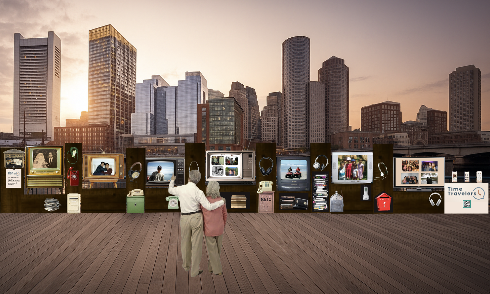
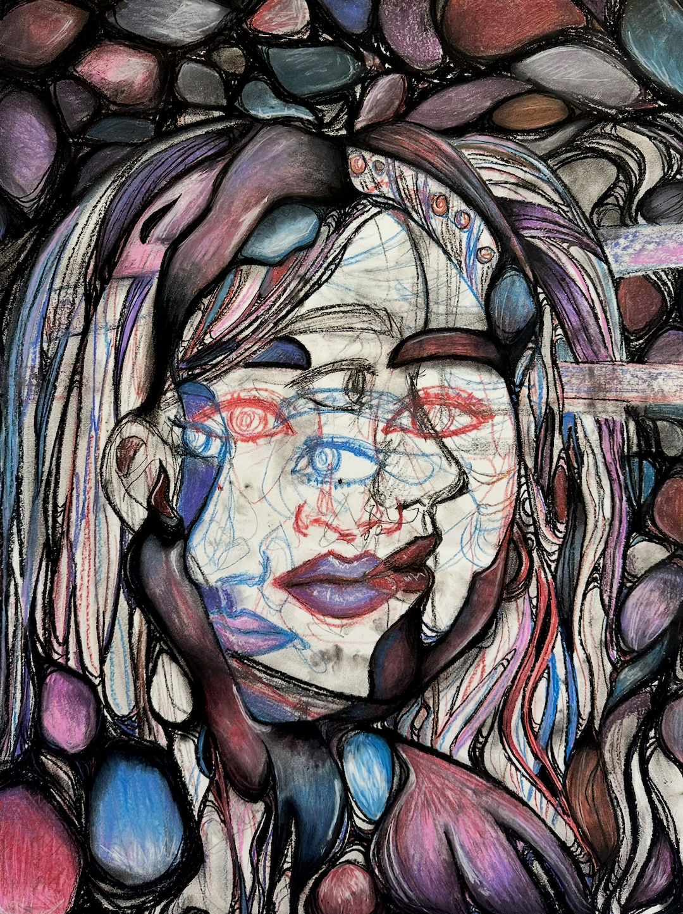
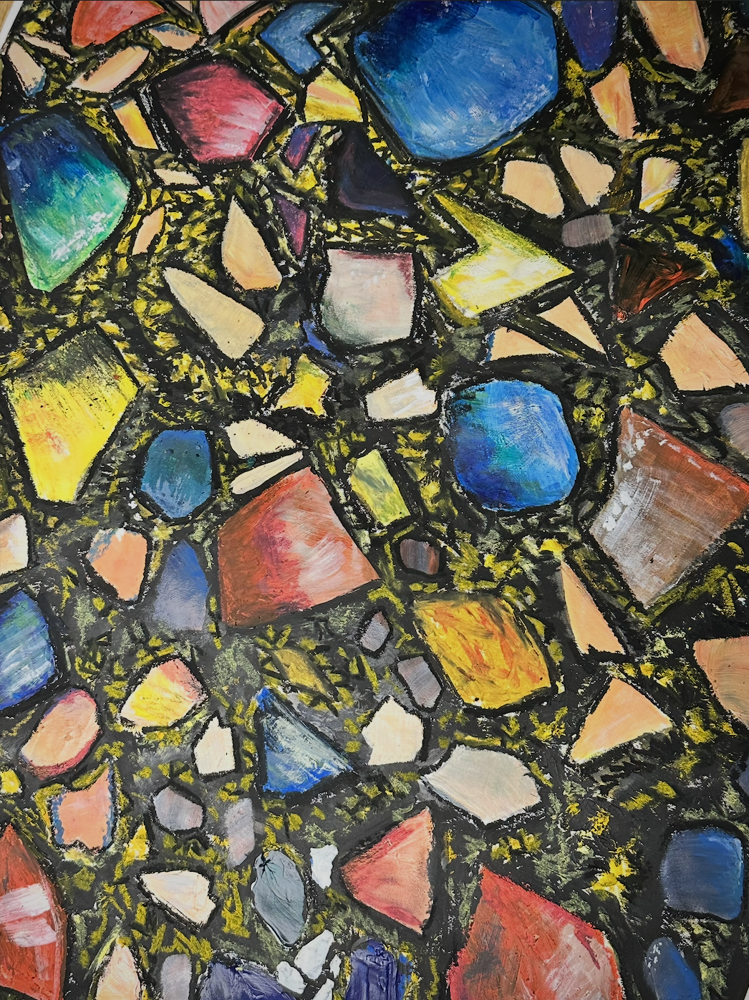
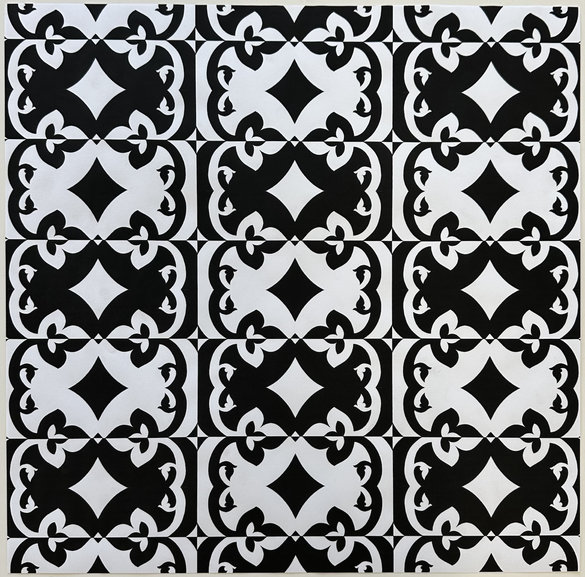
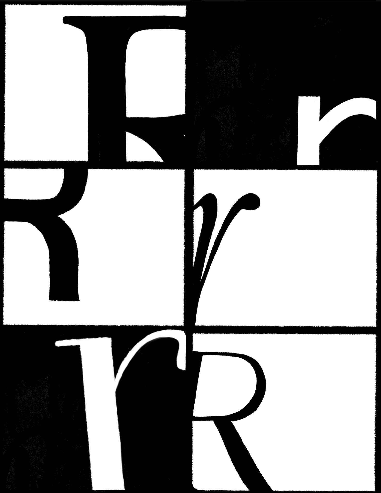
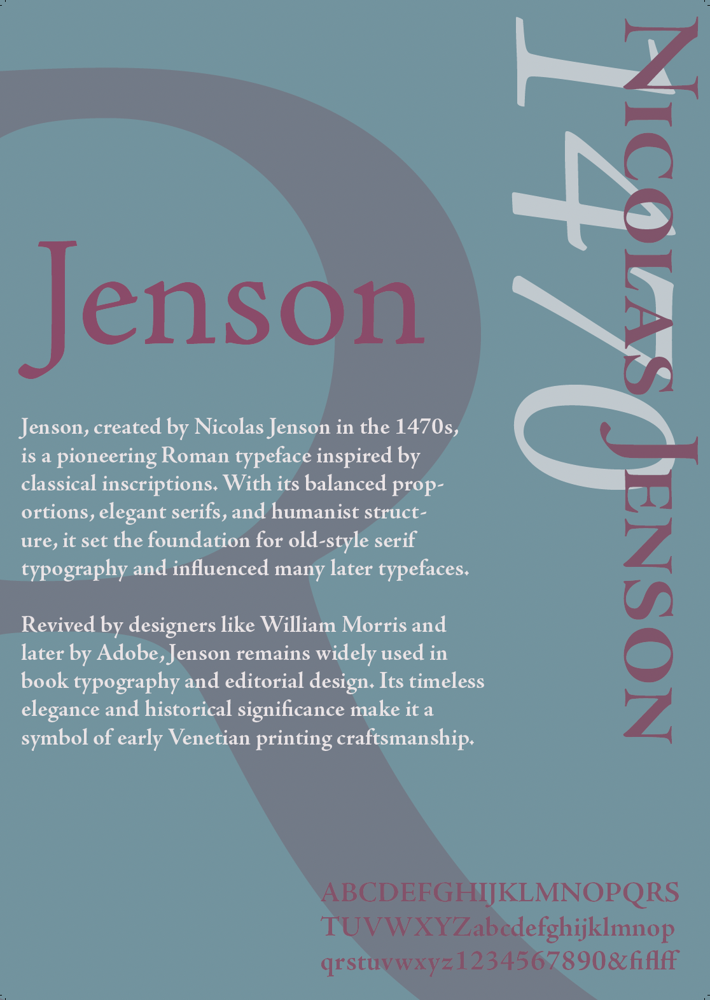
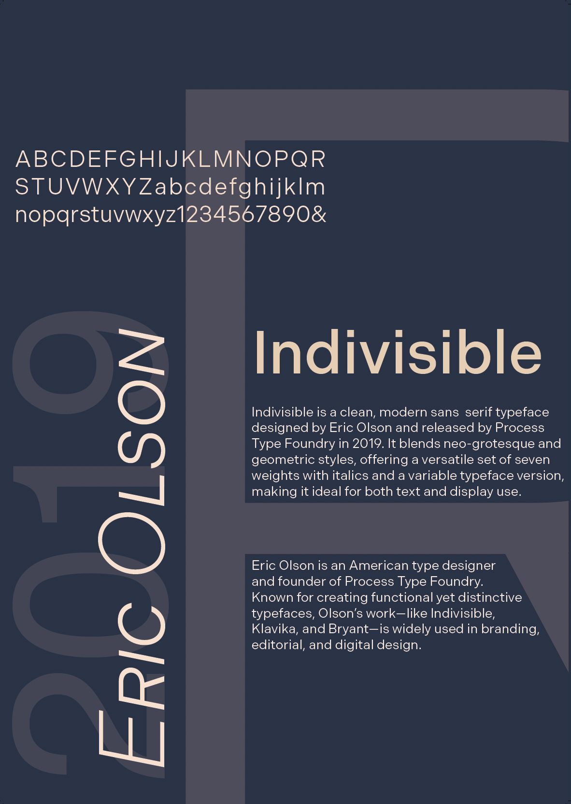

Selected work
Case studies in research, UX, and interaction design.

Time Travelers
An intergenerational storytelling experience that connects elders (65+) with Boston's changing Seaport through a memory-sharing app and a vintage-inspired physical installation.
view project → read paper ↗
read paper ↗
Memory infrastructure for longevity
A qualitative study on loneliness among Boston residents 65 and older, and how service design and local history can bring generations together in public spaces.
read on the DRS Digital Library ↗
MBTA App Redesign
A redesign of Boston's MBTA app with live train tracking, car capacity, temperature ratings, and a women-only car locator, inspired by Tokyo Metro and the London Tube.
view project →
FindAid
A web app that helps students find and organize financial aid for college. I designed the logo and prototyped the frontend, and our team, Nova, built it with React, Flask, and the College Scorecard API.
view project →Art Gallery
Posters, drawings, and visual experiments. scroll or drag →







Hi, I'm Robiya
I'm a third-year student from Nashville, TN, at Northeastern University majoring in Computer Science and Design, passionate about combining technology and visual creativity. My background spans both art and design work, designing and prototyping apps in Figma and building foundational UI/UX experience.
Outside of work, I love drawing, painting, traveling, and learning new languages and cultures, including diving deeper into my Uzbek heritage.
✦ Looking for UI/UX design and software engineering co-ops/internships for Spring and Summer 2027.